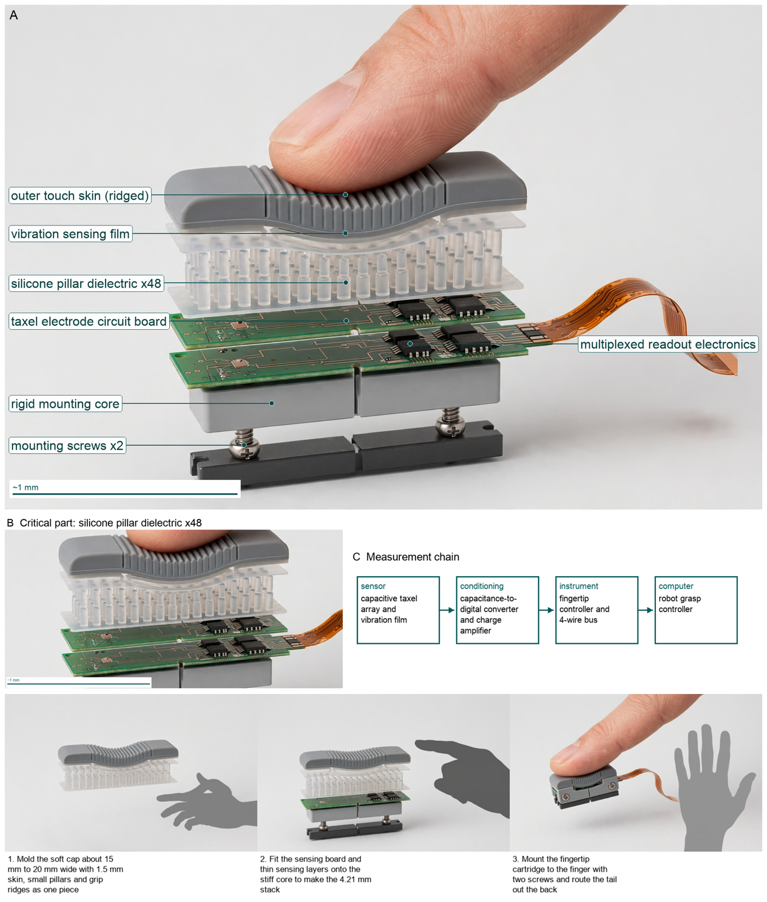
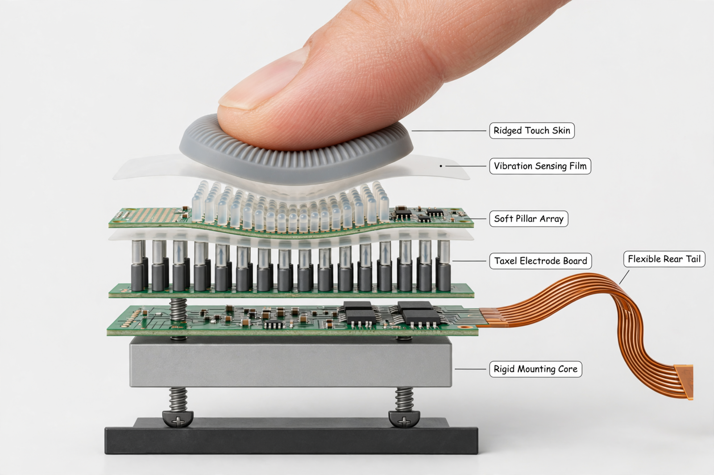
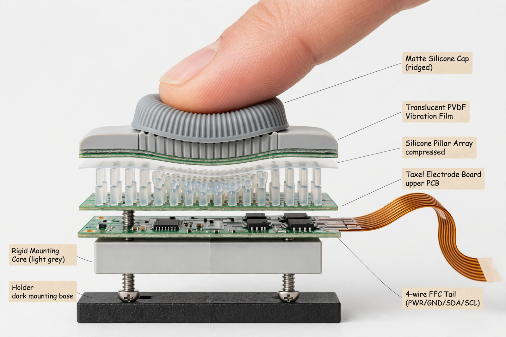
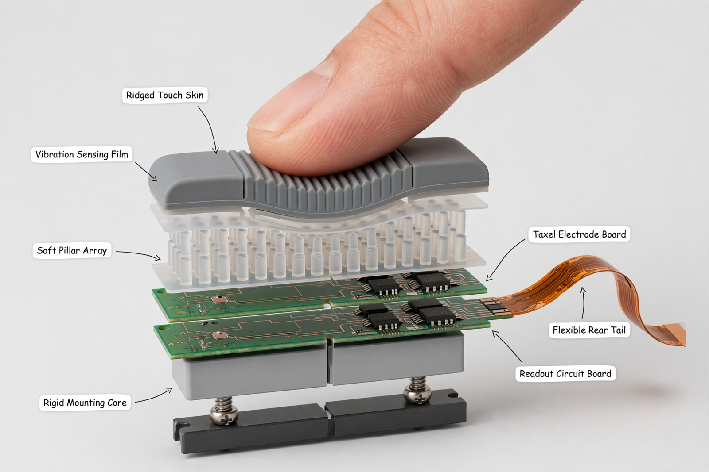
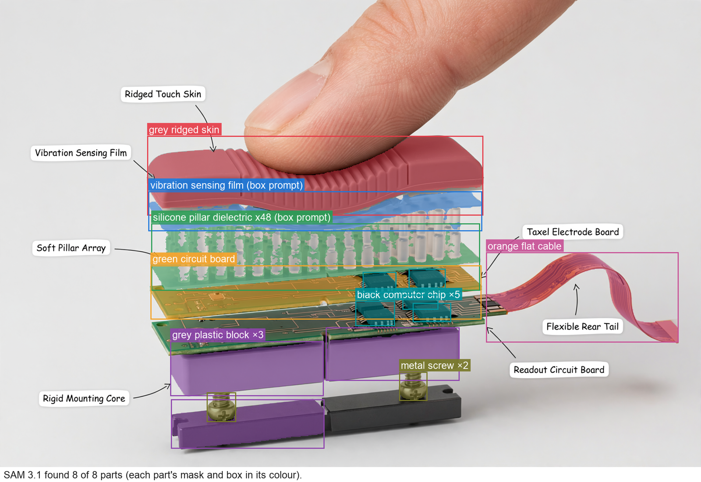

Hardware Scientist — concept report
Tactile fingertip sensor for robot hands
Robot hands drop and crush objects because they cannot feel what they hold. Design a fingertip for a robot hand that feels touch the way a human fingertip does: where it is touched, how hard, and when an object starts to slip.
- Shaped and sized like a human fingertip, mountable on a robot finger
- Detects contact forces as small as about 1 mN
The concept

Squeezing the soft fingertip compresses tiny cushions to measure steady push across about 48 points spaced 2.5 mm apart while a thin sensing layer feels fast buzz to catch slip.
Load: outer touch skin -> silicone pillar dielectric -> rigid mounting core | Measured: capacitive taxel array -> fingertip controller to 4-wire bus
Three decisive design choices
- Use soft air-gap molded pillars at 20 kPa effective stiffness as both spring and sensing gap to lift 1 mN to 2.66 fF above noise instead of solid silicone
- Split sensing into slow static capacitive taxels at 25 Hz and fast vibration film at 2 kHz with 6x8 row-column multiplexing to a single 4-wire bus
- Carry all grip load in a stiff bolted rigid core and holder with replaceable ridged skin cap and rear-exit tail so only pillars move
Will slip-triggered grip control with this fingertip prevent drops without crushing across objects in closed-loop tests?
What happened
How the picture was made


What the critic flagged:
- callout: leader for Taxel Electrode Board ends on silver-black pin shafts mid-array
- pillars: second array of rigid silver-black telescopic pins between two PCBs
- pcb: third green PCB middle layer creating three-board stack
- pcb: green electrode board drawn wavy/bent following finger dent
- skin: small isolated circular disc narrower than stack, floating above
- film: second translucent membrane between upper PCB and lower pins


Earlier faults now:
- callout: still wrong
- pillars: still wrong
- pcb: still wrong
- skin: still wrong
- film: still wrong
What the critic flagged:
- skin: small isolated ridged circular disc ~1/3 stack width dented center
- pillars: two arrays: upper grey vertical ribs under skin plus lower white translucent pillars between greens
- pcb: thin green board wavy/bent dented following finger
- film: translucent membrane between upper wavy green PCB and lower white pillars with two green boards
- callout: label Translucent PVDF Vibration Film leader ends on light-grey side block
- callout: label Silicone Pillar Array compressed leader ends on translucent film
- callout: label Taxel Electrode Board upper PCB leader ends mid white pillar array/flex joint
- callout: label 4-wire FFC Tail (PWR/GND/SDA/SCL) contains numbers/slashes/parens and leader ends on readout PCB edge


Earlier faults now:
- callout: fixed
- pillars: fixed
- pcb: fixed
- skin: fixed
- film: fixed
What the segmenter saw (SAM 3.1)
Code asked SAM for each part by a plain phrase and measured the boxes against what the design expects; the critic received the differences as evidence.

How the council changed
The council's instructions were not rewritten in this run.
References
0 sources found by the council's searches and the prior-art check (click to open)
Files
Run 20261102-194849_tactile-fingertip-sensor-for-robot-hands · total cost $2.91 · conceptual illustration — physical performance not established.